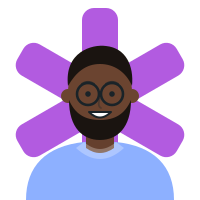
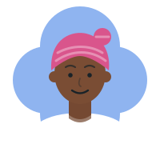
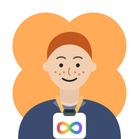
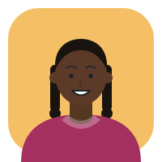
Aplicativo do cidadão e plataforma web de quem atende, integrados em tempo real: UBS, CRAS e creches.
Global Solution FIAP · CitizenTech
Documento da solução
Integrantes (ordem alfabética)
| Nome completo | RM |
|---|---|
| preencher nome 1 | RM |
| preencher nome 2 | RM |
| preencher nome 3 | RM |
Links da entrega
Repositório:
link do GitHub
Plataforma web:
link do deploy
Vídeo-pitch:
youtu.be/o2VoWSJshE0
No Brasil, muitos direitos sociais já existem em lei e já são financiados com dinheiro público: desconto na conta de luz para famílias de baixa renda, Cadastro Único, benefício para pessoa idosa ou com deficiência, remédios gratuitos no SUS, vaga em creche pública. O problema é que o caminho até esses direitos falha em dois pontos:
A informação está espalhada, cheia de siglas e escrita em linguagem difícil. Sem saber qual direito procurar, a pessoa desiste antes de começar.
Fila que ninguém vê, documento que falta, ida e volta ao serviço. Quem atende também trabalha às cegas: não sabe quem vai chegar nem o que a pessoa já tem.
Acrescente aqui 1 ou 2 frases sobre o que a equipe observou no território ou conversou com moradores (a proposta pede essa base).
Pessoas atendidas pela rede pública de saúde, assistência social e educação infantil, com foco em quem tem mais dificuldade de acesso: famílias de baixa renda, mães e pais de crianças pequenas, pessoas idosas, pessoas com deficiência e pessoas neurodivergentes. A solução é desenhada a partir de uma pessoa representativa:
Juliana, 27 anos, Itaquera (São Paulo)
Mãe do Bernardo, de 2 anos. Precisa voltar a trabalhar, mas não tem com quem deixar o filho. A família provavelmente tem direito a vaga em creche, ao Cadastro Único e ao desconto na conta de luz. Ela não sabe disso e, se soubesse, não saberia quais documentos levar nem onde ir. Usa o celular o dia todo, com pouca bateria e dados limitados.
Nomes de pessoas, endereços e números do projeto são fictícios e servem apenas à demonstração.
A divisão entre app e web nasceu das jornadas: o app é do cidadão (descobre e acompanha, na rua, com pressa) e a web é de quem atende e de quem gerencia (trabalha sentado, com várias pessoas ao mesmo tempo, precisa de telas largas, teclado e telão).
| Quem | Plataforma | O que quer resolver |
|---|---|---|
| Cidadão (Juliana) | App | Descobrir quais direitos tem, saber o que levar, agendar, pegar senha e acompanhar tudo. |
| Recepcionista da UBS | Web | Ver a fila ao vivo, chamar a próxima pessoa, atender quem não tem celular, controlar o telão da sala de espera. |
| Assistente social do CRAS | Web | Ver a agenda do dia com os documentos que cada pessoa já confirmou e registrar o resultado do atendimento. |
| Gestora de vagas de creche | Web | Acompanhar a lista de espera e abrir vagas, chamando a próxima família. |
| Gestores e público em geral | Web | Ver indicadores (espera, faltas, direitos mais procurados) e o movimento atual dos serviços, sem dados pessoais. |
| # | Etapa | Onde | O que acontece | Dificuldade que resolve |
|---|---|---|---|---|
| 1 | Entrar | App | Capa com a frase da solução, entrada e passo a passo de 4 telas explicando o que a pessoa vai ver. | Medo de não entender o app. |
| 2 | Descobrir direitos | App | Lista de direitos com status (“Você pode ter”, “Agendado”, “Em análise”, “Concedido”), em palavras simples. | Não saber que tem direito. |
| 3 | Saber o que levar | App | Cada direito explica o que é, quem pode e traz a lista de documentos, que a pessoa vai marcando. | Voltar para casa por falta de documento. |
| 4 | Agendar no CRAS | App + Web | O app cria o agendamento com os documentos confirmados; a assistente social vê na agenda do dia, na hora. | Chegar sem horário e sem preparo. |
| 5 | Pegar senha na UBS | App + Web | Só para quem está até 5 km da unidade (conferido pelo GPS). Aparece na fila da recepcionista e no telão; o app avisa quando chamar. | Fila física longa, sem criar “fila fantasma”. |
| 6 | Vaga na creche | App + Web | A gestora clica em “Abrir vaga”; o app avisa a família, que aceita ou recusa; a resposta aparece na lista da creche. | Perder a vaga por não receber o aviso. |
| 7 | Acompanhar | App + Web | O resultado registrado no CRAS muda o status do direito no app. | Ficar “no escuro” sobre o andamento. |
Recepcionista da UBS
Escolhe perfil e unidade → vê a fila ao vivo → “Chamar próximo” (atalho N) → o telão mostra e anuncia a senha → inicia, conclui ou marca “não compareceu” → emite senha no balcão (com impressão) para quem não tem celular.
Assistente social do CRAS
Abre a agenda do dia → vê documentos confirmados e os que faltam → atende → registra o resultado (atendido, falta documento, encaminhado, não compareceu), que atualiza o direito no app.
Gestora de vagas de creche
Acompanha a lista de espera por posição → “Abrir vaga” convoca a próxima família, com prazo de 48 horas → vê a resposta chegar do app e a vaga ser aceita ou recusada.
O Meu Direito une a descoberta de direitos e as filas de serviços públicos numa jornada só. São duas partes que conversam entre si em tempo real, cada uma com um motivo próprio de existir.
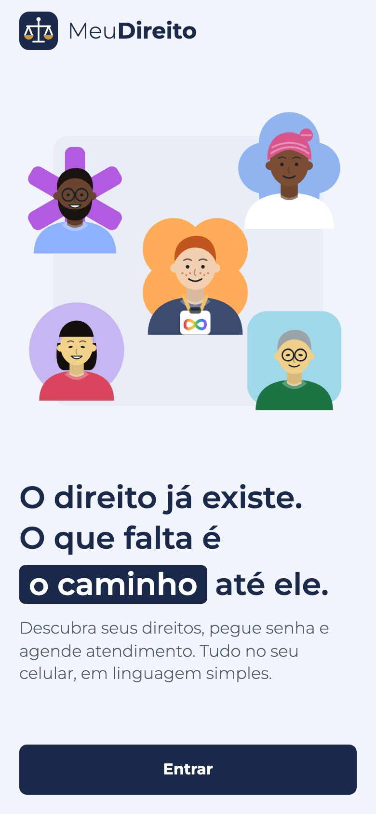
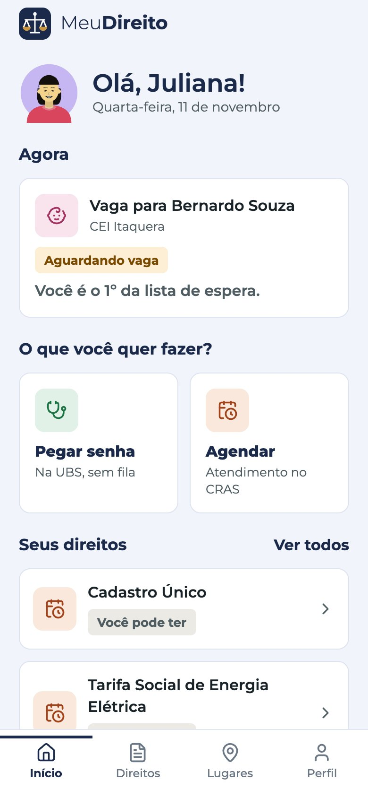
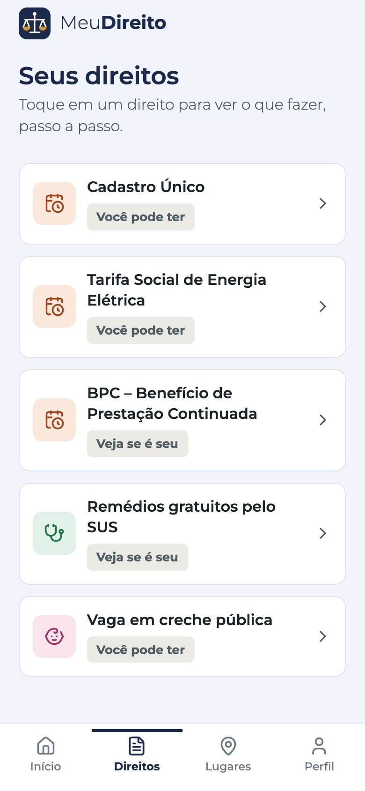
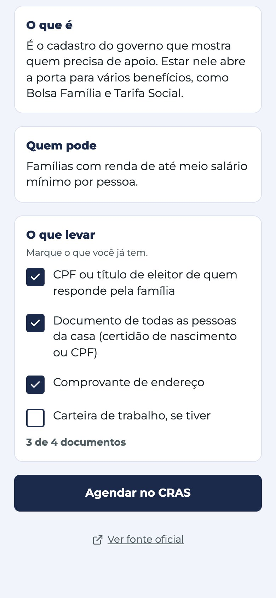
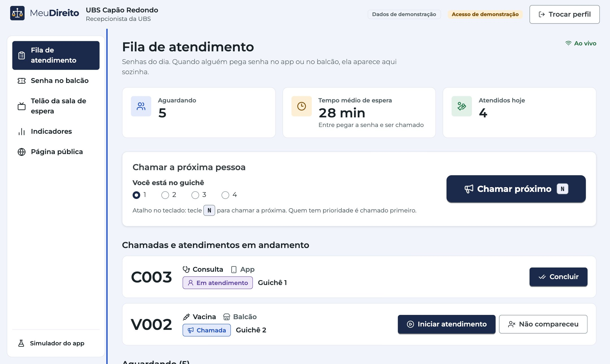
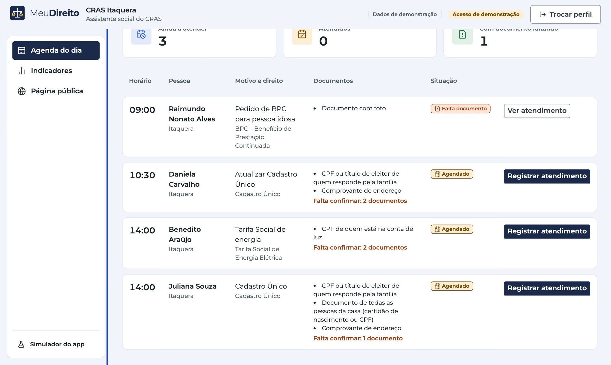
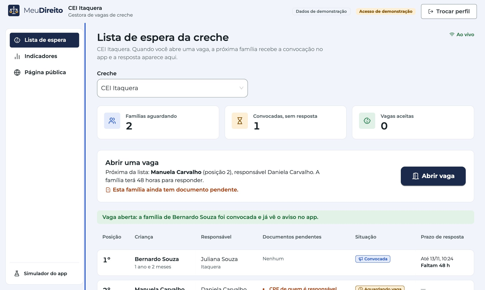
Cada tipo de lugar tem a sua própria tela, porque cada serviço trabalha de um jeito: a UBS lida com fila e senhas, o CRAS com agenda e documentos, a creche com lista de espera e vagas. Além dessas, há o telão da sala de espera (alto contraste, senha gigante e voz), os indicadores para gestores e a página pública com o movimento dos serviços, sem dados pessoais.
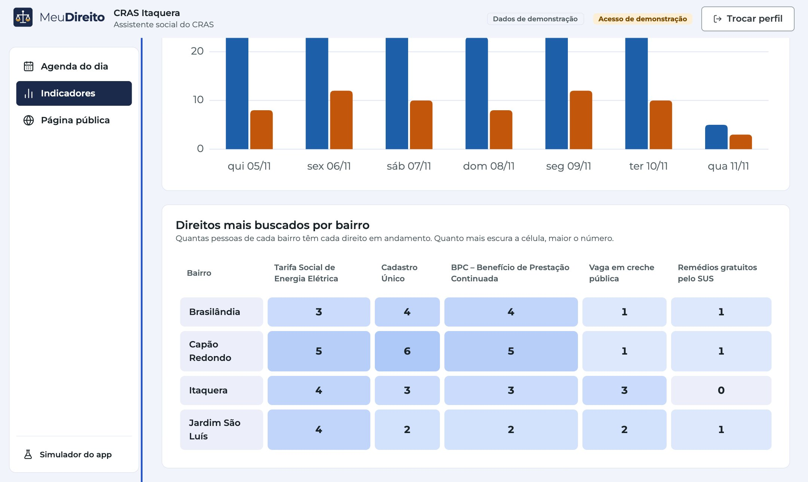
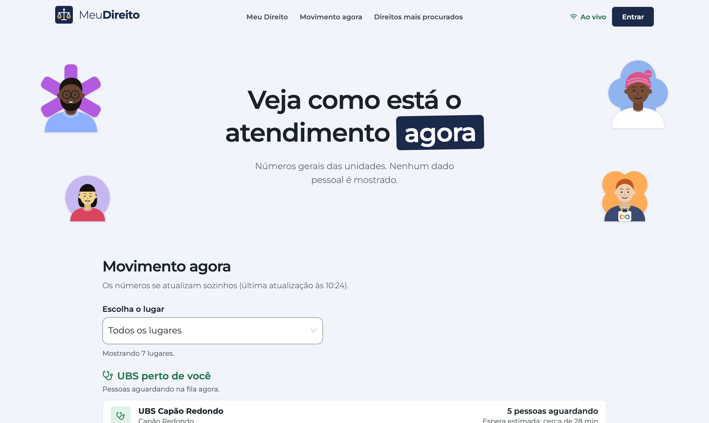
App e web usam o mesmo banco (Supabase: PostgreSQL com Realtime). Cada mudança nas tabelas senhas, agendamentos, lista_creche, direitos_cidadao e historico é publicada pelo Realtime, e as duas pontas recebem na hora, sem recarregar.
| Ação | Quem faz | Quem vê, na hora |
|---|---|---|
| Pegar senha na UBS | App | Fila da recepcionista e telão |
| “Chamar próximo” | Web | Telão (com voz) e senha no app |
| Agendar no CRAS, com documentos | App | Agenda da assistente social |
| Registrar o resultado do atendimento | Web | Status do direito no app |
| “Abrir vaga” de creche | Web | Convocação no app da família |
| Aceitar ou recusar a vaga | App | Lista da creche (resposta chega destacada) |
services/) com duas implementações, Supabase e dados de demonstração locais.Dados e verificação. Os dados iniciais são simulados (nomes, endereços e números fictícios), como a proposta permite. O fluxo entre as telas foi testado de ponta a ponta no modo de demonstração, em que as abas do navegador conversam entre si. O esquema SQL foi validado em um banco PostgreSQL local; a ligação com um projeto Supabase real depende de configurar as chaves (.env) e deve ser testada pela equipe antes da entrega. As políticas de segurança (RLS) são permissivas de propósito, só para a demonstração; em produção haveria autenticação real e regras por perfil.
Regra de distância. A senha da UBS pelo app só é liberada a até 5 km da unidade, pelo GPS do celular. É aplicada no app; uma versão de produção repetiria essa checagem no servidor.
docs/THEME.md).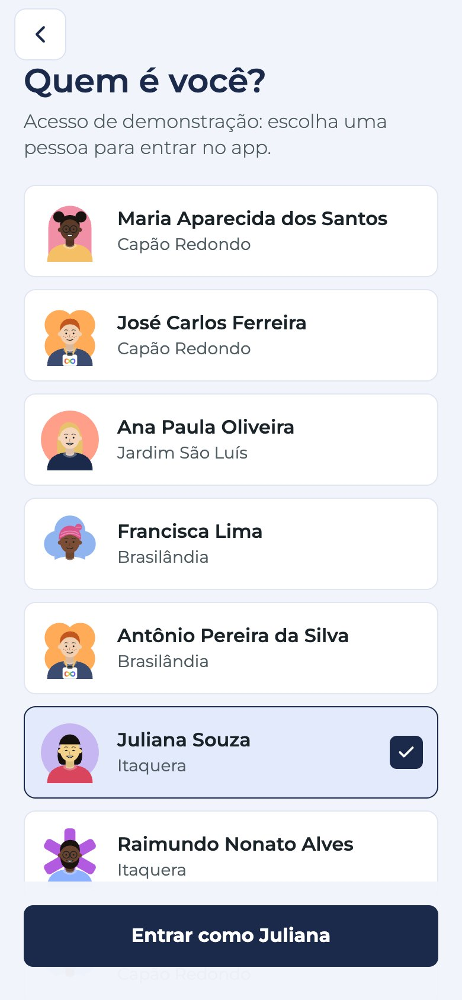
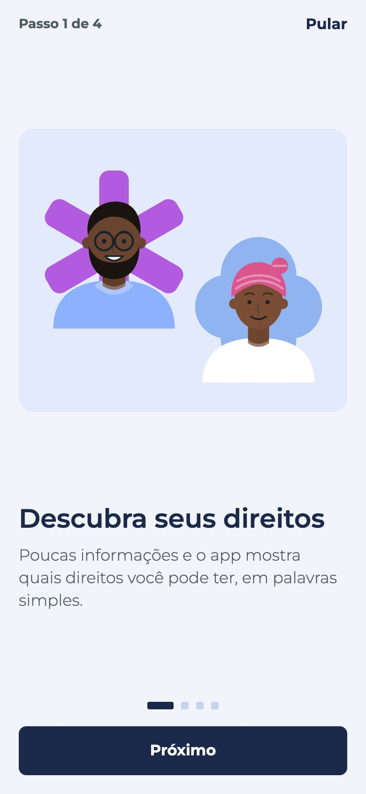
Regra do projeto: cada animação tem uma função (orientar, dar retorno, mostrar mudança de estado ou reforçar a personalidade), é calma e nunca alarmante. A maioria dura de 200 a 300 ms.
| Onde | O que acontece | Função na jornada |
|---|---|---|
| Fila da UBS | A senha chamada sai da lista e as demais sobem suavemente (250 ms). | Mostrar o efeito do clique em “Chamar próximo”. |
| Item novo do app | Entra com fundo amarelo e selo “Nova” por alguns segundos. | Mostrar que algo chegou do app em tempo real. |
| Resposta da família (creche) | Linha em destaque por 8 s, selo “Respondeu agora” e aviso falado pelo leitor de tela. | Mostrar que a resposta chegou. |
| Telão | A nova senha entra com zoom (0,85→1), borda amarela e “Chamando agora”. | Chamar a atenção na sala de espera. |
| Selos de status | Trocam com transição curta (200 ms). | Mostrar mudança de estado. |
| Troca de página | Aparece subindo 8 px (200 ms). | Orientar a navegação. |
| Botões e confirmações | Estado de carregamento e faixa verde “Senha R003 chamada no guichê 1”. | Dar retorno imediato sobre a ação. |
| Capa | Título aparece palavra por palavra, “o caminho” salta com mola e personagens entram em sequência (cerca de 2 s no total, depois tudo para). | Reforçar a personalidade sem ficar se mexendo. |
| Onde | O que acontece | Função na jornada |
|---|---|---|
| Capa e passo a passo | Elementos sobem e aparecem em sequência; os personagens flutuam devagar; cada passo entra com mola. | Receber a pessoa e explicar o app com leveza. |
| Botões | Afundam levemente ao toque (escala 0,97) com mola. | Confirmar o toque. |
| Telas de ação | Abrem deslizando por cima das abas. | Mostrar que é um passo à parte, que se fecha e volta ao início. |
| Cartões do Início | Aparecem em sequência; a senha e o status são anunciados a leitores de tela quando mudam. | Mostrar mudança de estado (“Sua vez!”). |
| Passo a passo e confirmações | Indicador de progresso com o ponto ativo alargado; a confirmação de senha e de agendamento aparece com ícone de sucesso. | Dar noção de progresso e fechar a ação. |
Sensibilidade a movimento. Na web, com a preferência “reduzir movimento” do sistema, o motion desliga as transformações, o Ant Design desliga as suas animações e uma regra global zera transições em CSS. Os destaques continuam como cor e texto, então nenhuma informação se perde. No app, as animações são curtas e só a capa e o passo a passo têm movimento contínuo (os personagens flutuando); leitura da preferência de movimento do celular ainda é um próximo passo.
A acessibilidade foi requisito desde o início, não um ajuste no final.
| Recurso | Web | App |
|---|---|---|
| Contraste | Cores validadas para WCAG AA (texto ≥ 4,5:1; bordas de campo ≥ 3:1), com contas em docs/THEME.md. | Mesmos tokens de cor da web. |
| Tamanho do texto | Tudo em rem; respeita o ajuste do navegador; funciona com zoom de 400%. | Opção “Letras grandes” no Perfil (texto 18% maior em todo o app). |
| Não depender só de cor | Status sempre com cor, ícone e texto; gráficos com tabela equivalente. | Status com texto (“Aguardando”, “Sua vez!”); tipo de serviço também por ícone. |
| Leitores de tela | HTML semântico, títulos em ordem, rótulos em campos e botões, aria-live educado para filas e agenda e assertivo para a senha chamada no telão. | Papéis e rótulos em botões, abas, opções e caixas; mudanças de senha e status anunciadas; avisos como alerta. |
| Alvos de toque / teclado | Navegação completa por teclado, link “Pular para o conteúdo” e foco visível de 3 px. | Botões e abas com 52 px de altura; chips e ícones com pelo menos 44 px, bem espaçados. |
| Movimento | Respeita prefers-reduced-motion; capa sem animação contínua. | Animações curtas, sem piscar. |
| Linguagem simples | Textos curtos e diretos, sem siglas sem explicação. Ex.: “Você pode ter”, “O que levar”, “Sua vez! Vá ao guichê 2”. O telão ainda fala a senha em voz alta. | |
| Permissões explicadas | Não se aplica. | O pedido de localização explica por que (“conferir se você está perto da UBS”) e a tela diz o que fazer se a pessoa negar. |
Como foi verificado. A web passou por auditoria automática com axe-core (WCAG 2.2 AA e boas práticas) em 10 telas (capa, entrada, página pública, simulador, telão, fila, balcão, agenda, lista da creche e indicadores), com zero violações, e foi conferida em 320 px de largura. O app foi testado no navegador (versão web do Expo); teste com leitor de tela real (VoiceOver ou TalkBack) no celular ainda deve ser feito pela equipe.
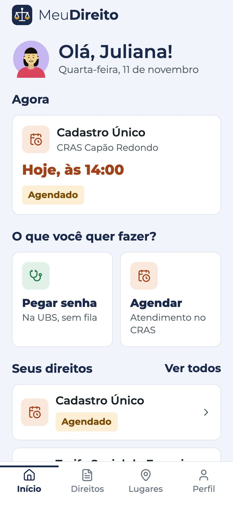
O Meu Direito contribui principalmente com os Objetivos de Desenvolvimento Sustentável abaixo, porque ataca a distância entre o direito que existe e a pessoa que consegue usá-lo.
Meta 10.2: promover a inclusão social de todos. Quem tem menos acesso à informação e à internet é quem mais perde direitos. O app explica em linguagem simples e a plataforma foi desenhada para pessoas idosas, com deficiência e neurodivergentes (letras grandes, contraste, voz no telão, atendimento no balcão para quem não tem celular).
Metas 16.6 e 16.10: instituições eficazes e transparentes, e acesso público à informação. A plataforma dá visibilidade ao atendimento (página pública com o movimento dos serviços e indicadores sem dados pessoais) e ajuda os serviços a atender melhor, ao mostrar a quem atende quem vai chegar e o que a pessoa já tem.
Meta 1.3: sistemas de proteção social. Cadastro Único, desconto na conta de luz e benefício para pessoa idosa ou com deficiência só protegem quem consegue acessá-los. O app mostra os direitos prováveis de cada pessoa e o caminho para conquistá-los.
Meta 3.8: acesso a serviços de saúde essenciais e a medicamentos. A senha pelo celular e o telão reduzem a espera na UBS, e o app informa que há remédios gratuitos pelo SUS e o que levar para retirá-los.
| Parte | Tecnologias |
|---|---|
| App mobile | Expo (React Native) e TypeScript, react-native-svg (logo e personagens), expo-location (GPS), Montserrat e @supabase/supabase-js. |
| Plataforma web | Vite, React 19, TypeScript, Tailwind CSS v4, Ant Design 6, React Router, motion, lucide-react e Montserrat. Configuração de deploy para a Vercel (web/vercel.json). |
| Banco e tempo real | Supabase (PostgreSQL, funções, gatilhos, views e Realtime): supabase/schema.sql e supabase/seed.sql. |
cd web && npm install && npm run dev (http://localhost:5173).cd mobile && npm install && npm run web (navegador) ou npm start e Expo Go no celular.VITE_SUPABASE_URL e VITE_SUPABASE_ANON_KEY (web) e EXPO_PUBLIC_SUPABASE_URL e EXPO_PUBLIC_SUPABASE_ANON_KEY (app). Sem elas, cada parte roda com dados de demonstração locais, que não são compartilhados entre web e app.| Item | Link |
|---|---|
| Repositório no GitHub | colar o link do repositório público |
| Plataforma web publicada | colar o link do deploy (Vercel, Netlify ou GitHub Pages) |
| Vídeo-pitch (2 a 3 minutos) | https://youtu.be/o2VoWSJshE0 |
| App (instruções ou Expo Snack) | Instruções no README.md do repositório. |